イラストでわかるDockerとKubernetes

Container
コンテナ技術の特徴
- 軽量な実行環境
- 高いポータビリティ
- ポータビリティとは
- コンテナイメージの軽量さとその挙動の再現性の高さ
- 業界標準仕様によるコンテナへの統一的な操作方法
- ポータビリティとは
- 巨大なエコシステム OSSがすごい. Docker, Kubernetes.
Docker
Build, Ship, Run の実践
% cd dev/docker/assets/samples/myimage
% ls
% cat <<EOF > hello.sh
heredoc> #!/bin/bash
heredoc> echo "Hello, World!"
heredoc> exec sleep infinity
heredoc> EOF
% chmod +x hello.sh
% cat <<EOF > Dockerfile
heredoc> FROM ubuntu:20.04
heredoc> COPY ./hello.sh /hello.sh
heredoc> ENTRYPOINT [ "/hello.sh" ]
heredoc> EOF
% docker build -t myimage:v1 .
Sending build context to Docker daemon 3.072kB
Step 1/3 : FROM ubuntu:20.04
20.04: Pulling from library/ubuntu
345e3491a907: Pull complete
57671312ef6f: Pull complete
5e9250ddb7d0: Pull complete
Digest: sha256:cf31af331f38d1d7158470e095b132acd126a7180a54f263d386da88eb681d93
Status: Downloaded newer image for ubuntu:20.04
---> 7e0aa2d69a15
Step 2/3 : COPY ./hello.sh /hello.sh
---> 8a968d611aad
Step 3/3 : ENTRYPOINT [ "/hello.sh" ]
---> Running in d3a43a91fd8d
Removing intermediate container d3a43a91fd8d
---> c17a675837ad
Successfully built c17a675837ad
Successfully tagged myimage:v1
% docker run myimage:v1
Hello, World!
% docker image ls
REPOSITORY TAG IMAGE ID CREATED SIZE
myimage v1 c17a675837ad 5 minutes ago 72.7MB
% docker tag myimage:v1 szkrkr/myimage:v1
% docker push szkrkr/myimage:v1
The push refers to repository [docker.io/szkrkr/myimage]
8833c0329e1a: Pushed
2f140462f3bc: Mounted from library/ubuntu
63c99163f472: Mounted from library/ubuntu
ccdbb80308cc: Mounted from library/ubuntu
v1: digest: sha256:bfdbf07b41369ca5e0aa4929e4be4913c9ddb83ac25930027dc336d52ba733f6 size: 1150
% docker pull szkrkr/myimage:v1
v1: Pulling from szkrkr/myimage
Digest: sha256:bfdbf07b41369ca5e0aa4929e4be4913c9ddb83ac25930027dc336d52ba733f6
Status: Image is up to date for szkrkr/myimage:v1
docker.io/szkrkr/myimage:v1
% docker run szkrkr/myimage:v1
Hello, World!
コンテナイメージ解剖
| どんなデータがで構成されているか | ファイル名 |
|---|---|
| コンテナが用いるルートファイルシステムのデータ | layer.tar |
| 実行コマンドや環境変数など、実行環境を再現するための情報 | c17a.....1144f.json |
| イメージの構成などに関する情報 | manifest.json, repositories |
| その他（過去の仕様との互換性のために保持されるファイル群) | VESION, json |
% docker save szkrkr/myimage:v1 | tar -xC ./dumpimage
% tree ./dumpimage
./dumpimage
├── 1392a7609ae8d845eba5fbe95e266a6b104d55b30262a284c960583f91307420
│ ├── VERSION
│ ├── json
│ └── layer.tar
├── 15cbe1c29902a1020a4a47c835a82f0416f1896f02fac942fdd35d326c63fa22
│ ├── VERSION
│ ├── json
│ └── layer.tar
├── 20f79c86180273e5ac0f522f4fd6a333f210784f0865dbaf020877d549bc4f8d
│ ├── VERSION
│ ├── json
│ └── layer.tar
├── 6d56becb66b184f78b25f61dc91f68fcfce4baeecb3a8dcb21ada2306091aab7
│ ├── VERSION
│ ├── json
│ └── layer.tar
├── c17a675837adfca54876833c67a451e85d0c4f502c78eae847fc52b9faa1144f.json
├── manifest.json
└── repositories
4 directories, 15 files
szkrkr@suzukirokurounoMacBook-Pro-2 myimage % tar --list -f ./dumpimage/1392a7609ae8d845eba5fbe95e266a6b104d55b30262a284c960583f91307420/layer.tar | head -n 10
run/
run/systemd/
run/systemd/.wh..wh..opq
run/systemd/container
szkrkr@suzukirokurounoMacBook-Pro-2 myimage % tar --list -f ./dumpimage/15cbe1c29902a1020a4a47c835a82f0416f1896f02fac942fdd35d326c63fa22/layer.tar | head -n 1
bin
szkrkr@suzukirokurounoMacBook-Pro-2 myimage % tar --list -f ./dumpimage/20f79c86180273e5ac0f522f4fd6a333f210784f0865dbaf020877d549bc4f8d/layer.tar | head -n 1
hello.sh
szkrkr@suzukirokurounoMacBook-Pro-2 myimage % tar --list -f ./dumpimage/6d56becb66b184f78b25f61dc91f68fcfce4baeecb3a8dcb21ada2306091aab7/layer.tar | head -n 1
etc/
レイヤとビルド
すでに同じイメージでビルドされている場合、キャッシュされる。
szkrkr@suzukirokurounoMacBook-Pro-2 hello % docker build -t hello:v1 .
Sending build context to Docker daemon 3.072kB
Step 1/5 : FROM ubuntu:20.04
---> 7e0aa2d69a15
Step 2/5 : RUN apt-get update
---> Running in bcc8dc051cdb
:
---> 634f8b8d5ab3
Step 3/5 : RUN apt-get install -y figlet
---> Running in f564cfbe6662
:
---> c83131622fd1
Step 4/5 : COPY ./hello.sh /hello.sh
---> ef604fed0f57
Step 5/5 : ENTRYPOINT [ "/hello.sh" ]
---> Running in a39beb43ef3a
Removing intermediate container a39beb43ef3a
---> 23f3fe28a651
Successfully built 23f3fe28a651
Successfully tagged hello:v1
szkrkr@suzukirokurounoMacBook-Pro-2 hello % docker run --rm --name=helo1 hello:v1
_ _ _ _ __ __ _ _ _
| | | | ___| | | ___ \ \ / /__ _ __| | __| | |
| |_| |/ _ \ | |/ _ \ \ \ /\ / / _ \| '__| |/ _` | |
| _ | __/ | | (_) | \ V V / (_) | | | | (_| |_|
|_| |_|\___|_|_|\___( ) \_/\_/ \___/|_| |_|\__,_(_)
szkrkr@suzukirokurounoMacBook-Pro-2 samples % cd ..
szkrkr@suzukirokurounoMacBook-Pro-2 samples % cp -r hello hello2
szkrkr@suzukirokurounoMacBook-Pro-2 samples % vi ./hello2/hello.sh
szkrkr@suzukirokurounoMacBook-Pro-2 samples % docker build -t hello:v2 ./hello2
Sending build context to Docker daemon 3.072kB
Step 1/5 : FROM ubuntu:20.04
---> 7e0aa2d69a15
Step 2/5 : RUN apt-get update
---> Using cache
---> 634f8b8d5ab3
Step 3/5 : RUN apt-get install -y figlet
---> Using cache
---> c83131622fd1
Step 4/5 : COPY ./hello.sh /hello.sh
---> 95bb577eb37f
Step 5/5 : ENTRYPOINT [ "/hello.sh" ]
---> Running in 1eba3d4fd497
Removing intermediate container 1eba3d4fd497
---> 0d1bbea0d708
Successfully built 0d1bbea0d708
Successfully tagged hello:v2
szkrkr@suzukirokurounoMacBook-Pro-2 samples % docker run --rm --name=hello2 hello:v2
___ _ __ __ _ _
|_ _| |_ \ \ / /__ _ __| | _____| |
| || __| \ \ /\ / / _ \| '__| |/ / __| |
| || |_ _ \ V V / (_) | | | <\__ \_|
|___|\__| ( ) \_/\_/ \___/|_| |_|\_\___(_)
|/
レイヤとコンテナ実行
CoWを知る。

Dockerアーキテクチャ

Kubernetes
Glosarry
- コンテナイメージ
コンテナ実行の素 - コンテナレジストリ
イメージ配布用サーバ - コンテナランタイム
Dockerなど Build, Ship, Run
レイヤ
変更差分- Docker クライアント docker cli など
- Docker デーモン (dockerd) コマンドからDOckerAPI経由でデーモンに指示。 イメージのpull/pushはDockerデーモンが行う。
- OCIランタイム 低レベルランタイム コンテナーの作成など